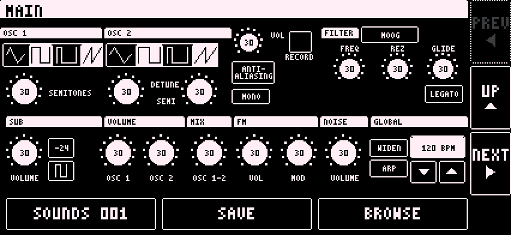

A full analog-style synth. Its editor has five pages: MAIN, ENV, FX, SEQ and PAD. Turn them with PREV and NEXT.

Play it from the Digitakt on the part's channel. Long press a control to assign a CC (defaults CC 70 to 77). See Synths and CCs.
Its arpeggiator and delay follow the Digitakt clock, so they stay in sync.